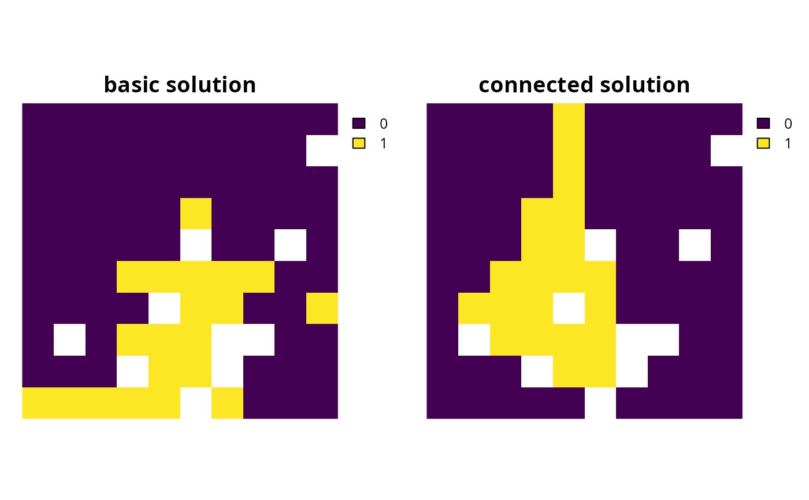

Add constraints to a conservation planning problem() to ensure
that all selected planning units are spatially connected with each other
and form a single contiguous unit.
# S4 method for ConservationProblem,ANY,ANY
add_contiguity_constraints(x, zones, data)
# S4 method for ConservationProblem,ANY,data.frame
add_contiguity_constraints(x, zones, data)
# S4 method for ConservationProblem,ANY,matrix
add_contiguity_constraints(x, zones, data)Arguments
- x
problem()(i.e.,ConservationProblem) object.- zones
matrixorMatrixobject describing the connection scheme for different zones. Each row and column corresponds to a different zone in the argument tox, and cell values must contain binarynumericvalues (i.e., one or zero) that indicate if connected planning units (as specified in the argument todata) should be still considered connected if they are allocated to different zones. The cell values along the diagonal of the matrix indicate if planning units should be subject to contiguity constraints when they are allocated to a given zone. Note arguments tozonesmust be symmetric, and that a row or column has a value of one then the diagonal element for that row or column must also have a value of one. The default argument tozonesis an identity matrix (i.e., a matrix with ones along the matrix diagonal and zeros elsewhere), so that planning units are only considered connected if they are both allocated to the same zone.- data
NULL,matrix,Matrix,data.frameobject showing which planning units are connected with each other. The argument defaults toNULLwhich means that the connection data is calculated automatically using theadjacency_matrix()function. See the Data format section for more information.
Value
Object (i.e., ConservationProblem) with the constraints
added to it.
Details
This function uses connection data to identify solutions that form a single contiguous unit. It was inspired by the mathematical formulations detailed in Önal and Briers (2006).
Data format
The argument to data can be specified using the following formats.
dataas aNULLvalueindicating that connection data should be calculated automatically using the
adjacency_matrix()function. This is the default argument. Note that the connection data must be manually defined using one of the other formats below when the planning unit data in the argument toxis not spatially referenced (e.g., indata.frameornumericformat).dataas amatrix/Matrixobjectwhere rows and columns represent different planning units and the value of each cell indicates if the two planning units are connected or not. Cell values should be binary
numericvalues (i.e., one or zero). Cells that occur along the matrix diagonal have no effect on the solution at all because each planning unit cannot be a connected with itself.dataas adata.frameobjectcontaining the fields (columns)
"id1","id2", and"boundary". Here, each row denotes the connectivity between two planning units following the Marxan format. The fieldboundaryshould contain binarynumericvalues that indicate if the two planning units specified in the fields"id1"and"id2"are connected or not. This data can be used to describe symmetric or asymmetric relationships between planning units. By default, input data is assumed to be symmetric unless asymmetric data is also included (e.g., if data is present for planning units 2 and 3, then the same amount of connectivity is expected for planning units 3 and 2, unless connectivity data is also provided for planning units 3 and 2).
Notes
In early versions, this function was named as the
add_connected_constraints() function.
References
Önal H and Briers RA (2006) Optimal selection of a connected reserve network. Operations Research, 54: 379--388.
See also
See constraints for an overview of all functions for adding constraints.
Other constraints:
add_feature_contiguity_constraints(),
add_linear_constraints(),
add_locked_in_constraints(),
add_locked_out_constraints(),
add_mandatory_allocation_constraints,ConservationProblem-method,
add_manual_bounded_constraints(),
add_manual_locked_constraints(),
add_neighbor_constraints()
Examples
# load data
data(sim_pu_raster, sim_features, sim_pu_zones_stack, sim_features_zones)
# create minimal problem
p1 <- problem(sim_pu_raster, sim_features) %>%
add_min_set_objective() %>%
add_relative_targets(0.2) %>%
add_binary_decisions() %>%
add_default_solver(verbose = FALSE)
# create problem with added connected constraints
p2 <- p1 %>% add_contiguity_constraints()
# \dontrun{
# solve problems
s <- stack(solve(p1), solve(p2))
# plot solutions
plot(s, main = c("basic solution", "connected solution"), axes = FALSE,
box = FALSE)

# }
# create minimal problem with multiple zones, and limit the solver to
# 30 seconds to obtain solutions in a feasible period of time
p3 <- problem(sim_pu_zones_stack, sim_features_zones) %>%
add_min_set_objective() %>%
add_relative_targets(matrix(0.2, ncol = 3, nrow = 5)) %>%
add_binary_decisions() %>%
add_default_solver(time_limit = 30, verbose = FALSE)
# create problem with added constraints to ensure that the planning units
# allocated to each zone form a separate contiguous unit
z4 <- diag(3)
print(z4)
#> [,1] [,2] [,3]
#> [1,] 1 0 0
#> [2,] 0 1 0
#> [3,] 0 0 1
p4 <- p3 %>% add_contiguity_constraints(z4)
# create problem with added constraints to ensure that the planning
# units allocated to each zone form a separate contiguous unit,
# except for planning units allocated to zone 2 which do not need
# form a single contiguous unit
z5 <- diag(3)
z5[3, 3] <- 0
print(z5)
#> [,1] [,2] [,3]
#> [1,] 1 0 0
#> [2,] 0 1 0
#> [3,] 0 0 0
p5 <- p3 %>% add_contiguity_constraints(z5)
# create problem with added constraints that ensure that the planning
# units allocated to zones 1 and 2 form a contiguous unit
z6 <- diag(3)
z6[1, 2] <- 1
z6[2, 1] <- 1
print(z6)
#> [,1] [,2] [,3]
#> [1,] 1 1 0
#> [2,] 1 1 0
#> [3,] 0 0 1
p6 <- p3 %>% add_contiguity_constraints(z6)
# \dontrun{
# solve problems
s2 <- lapply(list(p3, p4, p5, p6), solve)
s2 <- lapply(s2, category_layer)
s2 <- stack(s2)
# plot solutions
plot(s2, axes = FALSE, box = FALSE,
main = c("basic solution", "p4", "p5", "p6"))
 # }
# create a problem that has a main "reserve zone" and a secondary
# "corridor zone" to connect up import areas. Here, each feature has a
# target of 30% of its distribution. If a planning unit is allocated to the
# "reserve zone", then the prioritization accrues 100% of the amount of
# each feature in the planning unit. If a planning unit is allocated to the
# "corridor zone" then the prioritization accrues 40% of the amount of each
# feature in the planning unit. Also, the cost of managing a planning unit
# in the "corridor zone" is 45% of that when it is managed as the
# "reserve zone". Finally, the problem has constraints which
# ensure that all of the selected planning units form a single contiguous
# unit, so that the planning units allocated to the "corridor zone" can
# link up the planning units allocated to the "reserve zone"
# create planning unit data
pus <- sim_pu_zones_stack[[c(1, 1)]]
pus[[2]] <- pus[[2]] * 0.45
print(pus)
#> class : RasterStack
#> dimensions : 10, 10, 100, 2 (nrow, ncol, ncell, nlayers)
#> resolution : 0.1, 0.1 (x, y)
#> extent : 0, 1, 0, 1 (xmin, xmax, ymin, ymax)
#> crs : NA
#> names : layer.1.1, layer.1.2
#> min values : 190.13276, 85.55974
#> max values : 215.86384, 97.13873
#>
# create biodiversity data
fts <- zones(sim_features, sim_features * 0.4,
feature_names = names(sim_features),
zone_names = c("reserve zone", "corridor zone"))
print(fts)
#> Zones
#> zones: reserve zone, corridor zone (2 zones)
#> features: layer.1, layer.2, layer.3, ... (5 features)
#> data type: RasterStack
# create targets
targets <- tibble::tibble(feature = names(sim_features),
zone = list(zone_names(fts))[rep(1, 5)],
target = cellStats(sim_features, "sum") * 0.2,
type = rep("absolute", 5))
print(targets)
#> # A tibble: 5 × 4
#> feature zone target type
#> <chr> <list> <dbl> <chr>
#> 1 layer.1 <chr [2]> 16.7 absolute
#> 2 layer.2 <chr [2]> 6.24 absolute
#> 3 layer.3 <chr [2]> 14.4 absolute
#> 4 layer.4 <chr [2]> 8.53 absolute
#> 5 layer.5 <chr [2]> 11.3 absolute
# create zones matrix
z7 <- matrix(1, ncol = 2, nrow = 2)
print(z7)
#> [,1] [,2]
#> [1,] 1 1
#> [2,] 1 1
# create problem
p7 <- problem(pus, fts) %>%
add_min_set_objective() %>%
add_manual_targets(targets) %>%
add_contiguity_constraints(z7) %>%
add_binary_decisions() %>%
add_default_solver(verbose = FALSE)
# \dontrun{
# solve problems
s7 <- category_layer(solve(p7))
# plot solutions
plot(s7, "solution", axes = FALSE, box = FALSE)
# }
# create a problem that has a main "reserve zone" and a secondary
# "corridor zone" to connect up import areas. Here, each feature has a
# target of 30% of its distribution. If a planning unit is allocated to the
# "reserve zone", then the prioritization accrues 100% of the amount of
# each feature in the planning unit. If a planning unit is allocated to the
# "corridor zone" then the prioritization accrues 40% of the amount of each
# feature in the planning unit. Also, the cost of managing a planning unit
# in the "corridor zone" is 45% of that when it is managed as the
# "reserve zone". Finally, the problem has constraints which
# ensure that all of the selected planning units form a single contiguous
# unit, so that the planning units allocated to the "corridor zone" can
# link up the planning units allocated to the "reserve zone"
# create planning unit data
pus <- sim_pu_zones_stack[[c(1, 1)]]
pus[[2]] <- pus[[2]] * 0.45
print(pus)
#> class : RasterStack
#> dimensions : 10, 10, 100, 2 (nrow, ncol, ncell, nlayers)
#> resolution : 0.1, 0.1 (x, y)
#> extent : 0, 1, 0, 1 (xmin, xmax, ymin, ymax)
#> crs : NA
#> names : layer.1.1, layer.1.2
#> min values : 190.13276, 85.55974
#> max values : 215.86384, 97.13873
#>
# create biodiversity data
fts <- zones(sim_features, sim_features * 0.4,
feature_names = names(sim_features),
zone_names = c("reserve zone", "corridor zone"))
print(fts)
#> Zones
#> zones: reserve zone, corridor zone (2 zones)
#> features: layer.1, layer.2, layer.3, ... (5 features)
#> data type: RasterStack
# create targets
targets <- tibble::tibble(feature = names(sim_features),
zone = list(zone_names(fts))[rep(1, 5)],
target = cellStats(sim_features, "sum") * 0.2,
type = rep("absolute", 5))
print(targets)
#> # A tibble: 5 × 4
#> feature zone target type
#> <chr> <list> <dbl> <chr>
#> 1 layer.1 <chr [2]> 16.7 absolute
#> 2 layer.2 <chr [2]> 6.24 absolute
#> 3 layer.3 <chr [2]> 14.4 absolute
#> 4 layer.4 <chr [2]> 8.53 absolute
#> 5 layer.5 <chr [2]> 11.3 absolute
# create zones matrix
z7 <- matrix(1, ncol = 2, nrow = 2)
print(z7)
#> [,1] [,2]
#> [1,] 1 1
#> [2,] 1 1
# create problem
p7 <- problem(pus, fts) %>%
add_min_set_objective() %>%
add_manual_targets(targets) %>%
add_contiguity_constraints(z7) %>%
add_binary_decisions() %>%
add_default_solver(verbose = FALSE)
# \dontrun{
# solve problems
s7 <- category_layer(solve(p7))
# plot solutions
plot(s7, "solution", axes = FALSE, box = FALSE)
 # }
# }